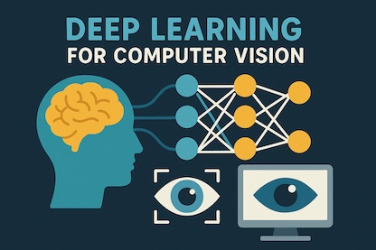

Introduction to Computer Science
Harvard’s flagship entry-level course teaches programming, algorithms, data structures, web basics and more, all with David Malan’s high-energy lectures and hands-on problem sets.
Harvard’s flagship entry-level course teaches programming, algorithms, data structures, web basics and more, all with David Malan’s high-energy lectures and hands-on problem sets.
A rigorous, math-oriented treatment of algorithm design and analysis, featuring lecture videos, problem sets and exams straight from MIT.

The go-to resource for convolutional neural networks, covering the theory and practice of modern deep-learning vision systems with detailed lecture notes and assignments.
A pioneer’s gentle, calculus-light introduction to the core algorithms behind supervised and unsupervised ML, complete with graded programming exercises in Octave/MATLAB or Python.
A step-by-step, “no-shortcuts” walkthrough that forces you to bootstrap each Kubernetes component manually—perfect for really understanding how clusters fit together.
Mozilla’s continually-updated, vendor-neutral curriculum covering HTML5, CSS, JavaScript, accessibility and tooling, with interactive examples and practice projects.
Free, self-paced Google course that walks true beginners through building their first Android apps while learning Kotlin and Android Studio fundamentals.
The canonical guide from reactnative.dev that shows how to spin up your first Expo-powered React Native project for both Android and iOS.
A free, self-paced MOOC covering threats, trends, careers and fundamental defensive concepts from Cisco Networking Academy.
An interactive browser-based learning track that builds the technical groundwork you need before diving into offensive or defensive hacking.
A browser-based, 30-chapter course that teaches frames, auto-layout, components and prototyping while you build a portfolio web page.
Coursera’s industry-recognised program taught by Google designers; covers research, wireframing, prototyping and portfolio building.
Software engineering is the application of engineering principles to design, develop, and maintain software systems. It focuses on creating reliable, efficient, and scalable software solutions through structured methodologies, including coding, testing, and deployment.
Artificial Intelligence (AI) is the field of computer science focused on creating systems capable of performing tasks that typically require human intelligence, such as learning and decision-making. It uses algorithms, data, and models to enable machines to adapt and improve their performance over time.
Cybersecurity is the practice of protecting systems, networks, and data from digital threats like hacking, malware, and unauthorized access. It involves implementing security measures such as encryption, firewalls, and authentication to ensure the confidentiality, integrity, and availability of digital assets.
Data science involves using statistical analysis, algorithms, and machine learning to extract insights and patterns from data. It combines programming, mathematics, and domain knowledge to make data-driven decisions and predictions in various fields.